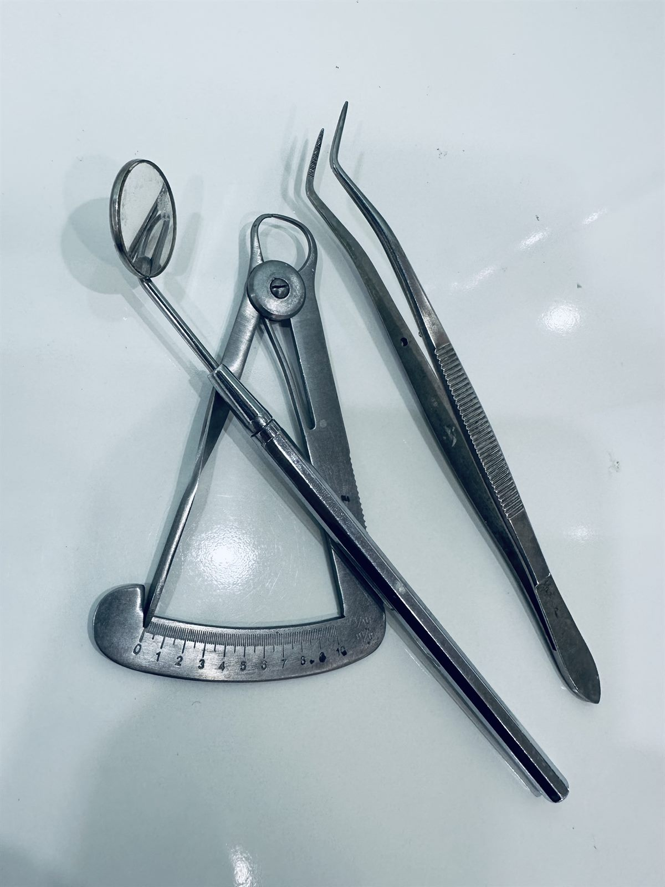
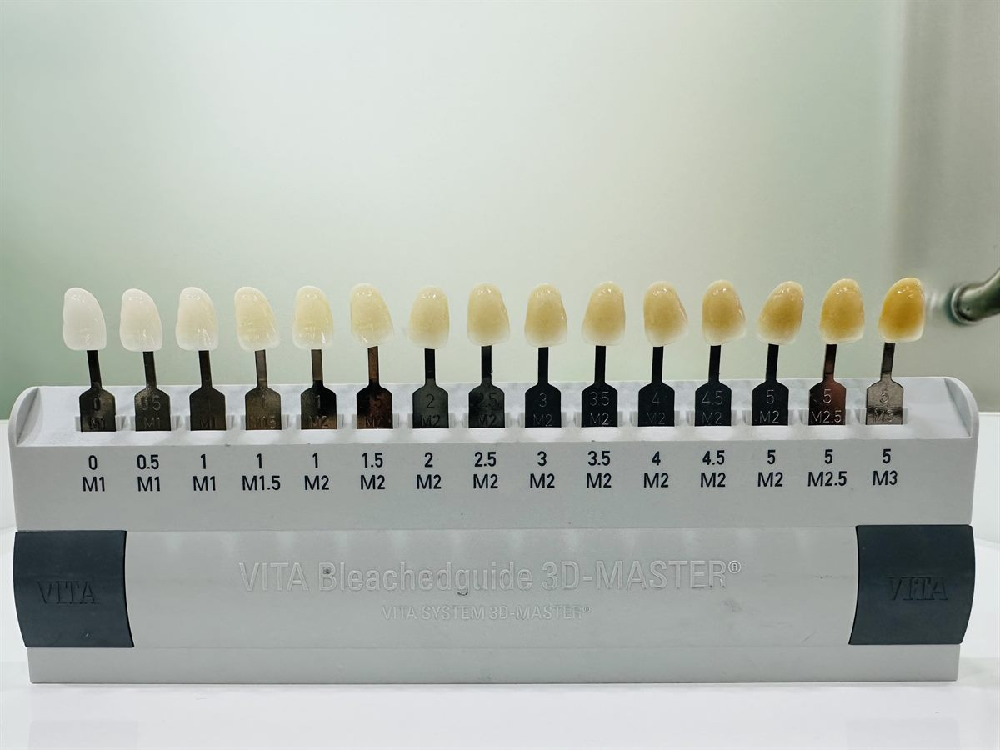
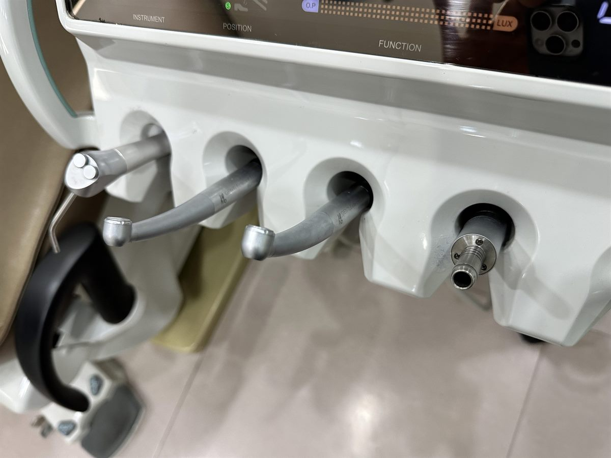

정확히 보고 설명정직한 진단
필요하지 않은 치료를 권하지 않고, 가능한 선택지를 충분히 설명합니다.
OUR STANDARD
치과 치료는 한 번의 선택이 오래 남습니다. 이우주치과는 환자가 이해할 수 있는 설명, 치료 전후의 명확한 기준, 장기적인 유지까지 고려한 진료를 중요하게 생각합니다.
진료 전 설명부터 치료 후 관리까지
기준이 분명한 치과진료

정확히 보고 설명필요하지 않은 치료를 권하지 않고, 가능한 선택지를 충분히 설명합니다.

색과 형태의 조화치아만 보는 것이 아니라 얼굴형, 웃는 선, 잇몸 라인까지 함께 고려합니다.

정밀함이 만드는 안정성당장의 변화보다 치료 후 안정성과 유지 관리까지 생각합니다.
GENERAL CARE
치아 배열, 보철, 임플란트 상담까지 현재 상태를 정확히 보고 환자의 상황에 맞는 치료 방향을 차분히 안내합니다.
배열만 맞추는 교정이 아니라, 교합과 얼굴 조화까지 고려한 교정 계획을 세웁니다.
자연스러운 색감, 형태, 잇몸 라인을 고려해 티 나지 않는 아름다움을 추구합니다.
정확한 진단과 보철 중심 계획으로 씹는 힘과 유지 안정성을 함께 고려합니다.
턱의 통증, 소리, 불편감을 살피고 생활 습관과 교합까지 함께 고려합니다.
SIGNATURE CARE
오로지 심미를 위한 치료는 시작부터 과정이 달라야 합니다. 교정, 라미네이트, 심미보철, 임플란트까지 기능과 안정성을 지키면서 얼굴과 미소에 자연스럽게 어울리는 결과를 한 명의 원장이 통합적으로 조율합니다.
AESTHETIC TX
단순히 하얗게, 가지런하게 만드는 치료가 아니라 치아 비율, 입술선, 잇몸 라인, 얼굴 조화까지 먼저 설계합니다.
SMILE DESIGN
교정, 라미네이트, 심미보철은 각각의 장단점이 다릅니다. 필요한 치료를 조합해 과하지 않은 자연스러운 변화를 목표로 합니다.
ONE DOCTOR COORDINATION
진단, 치료 순서, 보철 디자인, 유지 관리까지 한 명의 원장이 전체 흐름을 보고 조율해 치료 방향이 흔들리지 않도록 합니다.
IMPLANT & PERIODONTAL
임플란트 주변 염증, 잇몸뼈 상태, 치주질환으로 인한 불편감까지 함께 살피며 심미성과 기능 회복을 같이 고려합니다.
DOCTOR
오랜 기간 한 자리에서 쌓은 진료 경험을 바탕으로, 환자에게 꼭 맞는 치료 방향을 제안합니다.
DIRECTOR
통합치과전문의
NAVER REVIEWS
네이버 플레이스 리뷰에서 자주 보이는 말은 친절한 설명, 편안한 진료, 꼼꼼한 치료, 그리고 자세한 교정 상담이었습니다.
108
방문자 리뷰
“치과 공포가 있었는데, 설명을 자세히 해주셔서 편안하게 진료받았어요.”
친절한 설명 · 편안한 진료
“교정 상담을 자세하게 해주시고, 치료 방향을 이해하기 쉽게 설명해주셨어요.”
교정 상담 · 자세한 설명
“멀리 있어도 생각나서 다시 오게 되는 곳이에요. 주변에 추천하고 싶습니다.”
재방문 · 추천
“교정 중에도 불편한 부분을 세심하게 봐주시고, 필요한 설명을 잘 해주셔서 안심됐어요.”
교정 관리 · 세심함
“여러 곳에서 교정 상담을 받아봤는데, 가장 진심 있게 봐주신다는 느낌을 받았습니다.”
교정 비교 상담 · 신뢰
교정 상담이 자세해요 · 설명을 잘해줘요 · 꼼꼼해요 · 편안해요 · 추천해요
네이버 방문자 리뷰에서 반복되는 긍정 키워드
LOCATION
ADDRESS
서울 영등포구 시흥대로 675 삼성 YJ 그랜드빌딩 301호
지번 대림동 952-19
HOURS
TEL
02-848-2875